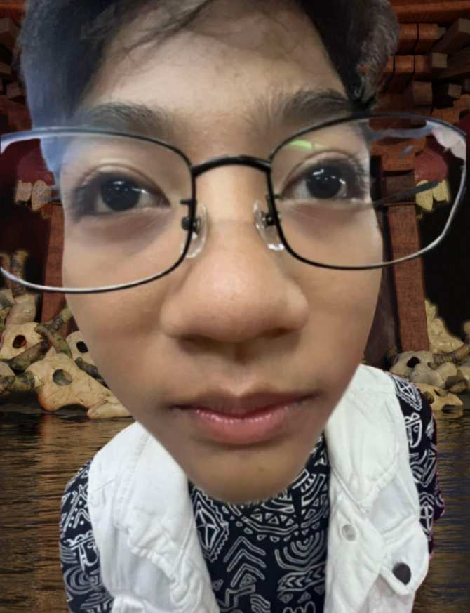
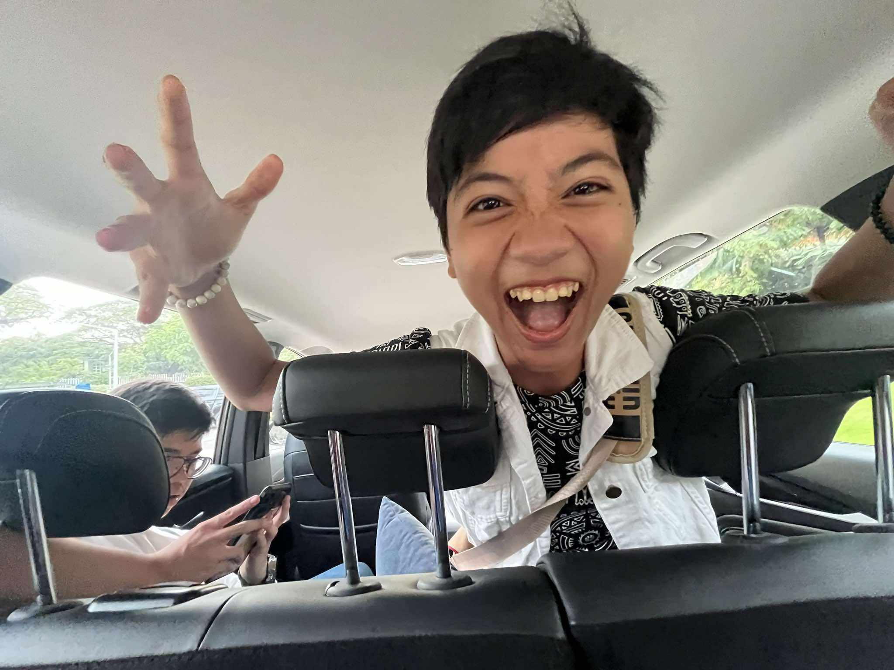
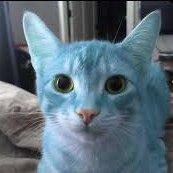

E-Port
About me


This is me
14 yrs | He/Him
I got lost when i took this picture
This guy made this Portfolio
he pretty cool ig

Reflection
I have learned a lot in the first quarter of ICT, particularly with the introduction of forms, lists, tables, hyperlinks, and more importantly, XHTML. Because XHTML imposes a more stricter set of rules than HTML, it has given me the basic bases in web building. I've learned from this how important it is to have well-structured code so that the website will work properly in any browsers.
My experience learning both ordered and unordered lists has taught me how to efficiently arrange content for navigation menus and information displays. Tables have also opened my eyes to new ways of organizing complicated and messy data. Obtaining the knowledge of organizing and my understanding of how websites present information in a precise, user-friendly way has improved as a result of my learning about table structure and style.
Links have highlighted the way in which the web is connected. I now understand how to properly use them as the interactivity of the website and how to use them to navigate between pages. And lastly, forms. Forms have taught me how to gather data in a user-friendly way, giving them a easy way to enter the information to my website.